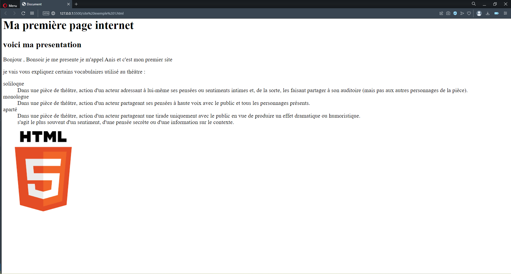
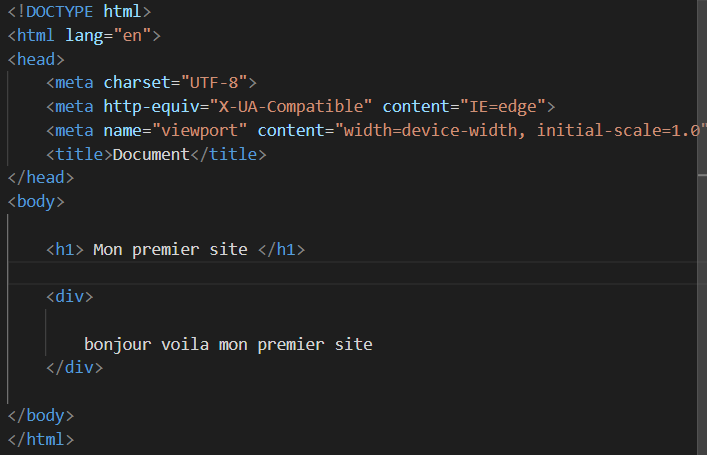

Bonjour visiteur , sur ce site tu peux aquérire plusieurs connaissance sur la programmation d'un site HTML et avec toutes les options pouvons être associé à ce language .

Nous t'invitons donc le créateur de ce site (moi) , et ma personne à essayer de vous cultiver sur cette vision du front-end jusqu'au back-end
 C'est quoi ça le front et le back truc?
le front-END est ce qui t'entoure en ce moment même . Et oui ce site la ces couleurs , ces boutons , ces images sont l'oeuvre du front-end . En quelque sorte c'est le coté visible par vous les visiteurs de site internet . Mais comme tu as plus le comprende le front-end n'est que la partie visible du ice berg et ce qui permet a ton site de fontionner est le back-end
Le back-end lui est la partie immerger de ce grand ice berg , ici nous allons forcemment parler que en création du site internet . Ceci dit le back end varie celon les types de choses que nous souhaitons faire . Ici , sur ce site internet le back-end est composé de java script et de PHP pour vous permettre une visite la plus plaisante sur mon site .
------Dans cette page vous trouverez------
- Le topic
- La salutation
- l'explication du front-end
- l'explication du back-end